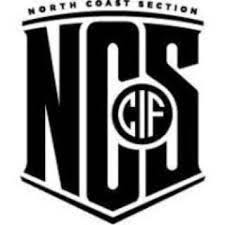

Issued by Tri-County Athletic League (TCAL) North Coast Section (NCS) · Jun 2022 · Associated with Pinole Valley High School
As a co-captain of Pinole Valley's varsity baseball team, I posted a .397 batting average and a .833 OPS over 64 plate appearances during my 2022 senior season. I led by example on and off the field all year — from summer showcase tournaments and fall scrimmages to winter lift and spring season. I participated in post-practice workouts in the batting cages and maintained a competitive mindset that was contagious to our team's morale and winning culture. Our team's success was reflected in our winning record, earning an appearance in the North Coast Section Regional Tournament. I balanced my athletic commitments with academic responsibilities, demonstrating strong time management. Earning All-League was the culmination of 12+ years of hard work, discipline, and dedication to being the best at the sport I love. This experience deepened my understanding of leadership, winning culture, and the value of team cohesion.

Issued by Director of PVHS Engineering Ms. Johnson · Apr 2019 · Associated with Pinole Valley High School
I was honored with the Rising Scholar Award from our Engineering Academy during my freshman year. This award recognized my commitment to STEM and my role in representing the school at major engineering events. I showcased a self-driving line-following car that I built at the 2018 Bay Area Science Festival in San Francisco, where I demonstrated the project to the public and explained the design process. I also participated in the 2019 PLTW One-Day Innovation Challenge, where my team developed a working prototype in a single day. We traveled to Sacramento to present our solution to judges, other competing NorCal high school engineering teams, and a live audience, which helped sharpen my public speaking and technical communication skills. These experiences taught me the value of clear presentation, teamwork, and creative engineering under pressure. I'm proud to have represented a small but passionate group of aspiring engineers from Pinole Valley on a regional stage. The Rising Scholar Award motivated me to continue pursuing engineering and to lead by example in future STEM opportunities.